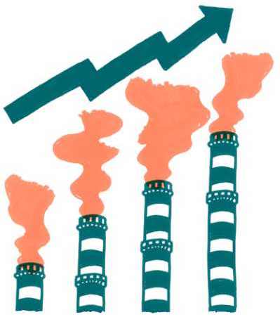

6.3 Moc a odkrývání toho, kdo ji má
Je zřejmá nespravedlnost mezi tím, že právě bohatší a mocnější lidé těží z ekonomického růstu a vytvářejí největší množství emisí, zatímco ti chudší a zranitelnější se naopak musejí vypořádávat s negativními dopady klimatické krize.1 Snahy o snižování emisí, udržitelnější zemědělství či ozdravení krajiny totiž narážejí na zájmy lidí a firem, které z neudržitelných forem podnikání profitují. Pět z deseti nejbohatších českých oligarchů přitom podniká přímo v těžbě fosilních paliv či v průmyslovém zemědělství – tedy v oblastech, v nichž musí dojít k největším změnám.2
Bohatí mají moc upravovat si pravidla ve prospěch vlastního soukromého zájmu, jak se jasně ukázalo například při tvorbě nového stavebního zákona.3 Tato moc pak brání společnosti v nacházení společného zájmu, který je nutné prosadit pro úspěšné řešení klimatické krize. Právě mocenské struktury a jejich vliv popisuje tato kapitola.
První část kapitoly se věnuje jednotlivým dynamikám, které svým mocenským působením blokují spravedlivou transformaci ke klimatické neutralitě. Druhá část textu pak ukazuje možné způsoby, jak se těmto vlivům postavit. Závěr kapitoly je věnován konkrétní ilustraci mocenských struktur v energetice.
Kdo blokuje spravedlivou transformaci
Klimatickou krizi lze považovat za všeobecně známou skutečnost nejpozději od roku 1988, kdy se globální oteplování po vystoupení klimatologa Jamese Hansena v Kongresu USA poprvé dostalo na přední stránky světového tisku.4 Přesto lidstvo od té doby vypustilo do atmosféry víc skleníkových plynů než v celé své předešlé historii od počátku průmyslové revoluce.5 Přes všechna dosavadní varování vědců, rostoucí znepokojení široké veřejnosti i návrhy řešení emise nejenže neklesají, ale dále rostou. Politické reprezentace, od nichž se dohoda na globálním řešení očekává, se zdráhají vyslyšet volání lidí, kteří je podobně jako Greta Thunbergová vyzývají, aby poslouchali vědce.6
Jak je možné, že se situace stále zhoršuje? Velkou roli hraje to, že firmy a osoby, které ze současného fungování světa nejvíce těží, využívají svého vlivu k zachování stávající podoby systému a ekonomiky. Změny potřebné pro řešení klimatické krize by mohly ohrozit jejich zisk i moc. Vlivní aktéři se zapojí do řešení buď tehdy, jestliže to pro ně bude finančně výhodné, anebo když k tomu budou dotlačeni státem či vlivem konkurenčních trendů.
Aktéři, kteří mají relativně vysoké sázky v současném systému, mají v rámci toho systému i nějakou moc. Je těžké si představit, že by začali prosazovat udržitelnější řešení. Zisk je primární drive, hlavně u soukromých aktérů – a je jedno, jestli se bavíme o produkci dopravy, nebo energie.
Lukáš Lehotský
Ve struktuře české ekonomiky navíc hrají dominantní roli ty nejméně udržitelné formy podnikání. Na předních příčkách žebříčku nejvýznamnějších firem jsou dvě automobilky (Škoda a Hyundai), tři uhelně-plynové energetické firmy (ČEZ, EPH a RWE), jedna agrokorporace (Agrofert), jedna ocelárna (Moravia Steel) a jedna petrochemická společnost (Unipetrol).7
Mediální i politická krajina je manipulována mocenskými skupinami, jejichž zájem je s řešením klimatické krize v rozporu. Tato dynamika je zjevná napříč ekonomickými odvětvími i kontinenty – od desetiletí trvající dezinformační kampaně amerického ropného průmyslu popírající změny klimatu8 až po ve své podstatě totožné lobbistické a mediální strategie českých uhlobaronů9.
Problémem přitom není sám princip zisku jako takový nebo soukromé podnikání obecně. Zásadnějším problémem je velikost a míra moci, která s velikostí firem a jejich zisku roste. Menší podniky, jež vlastní lidé přímo v místech svého působení, mají větší motivaci hledět na lokální potřeby komunity a okolního prostředí než celostátní nebo nadnárodní velké společnosti a koncerny.
Důsledkem pak může být i to, že menší aktéři, jako například obce, ztrácejí možnost chránit krajinu ve svém nejbližším okolí. Na pozemkové úpravy potřebují souhlas od vlastníků pozemků, jenže velké pozemky často vlastní velké koncerny s obrovskou mocí. Obce do podobného konfliktu jít nechtějí, protože místní starostové a starostky nemají oproti hráčům, jako je Babišův Agrofert, žádný vliv, peníze a ani kompetence.
Pokud si však velké firmy chtějí svůj zisk a svou moc udržet, pod tlakem prohlubující se klimatické krize a rozrůstajících se klimatických opatření jim nezbyde nic jiného než se začít přizpůsobovat. V jejich vlastním zájmu bude, aby samy investovaly peníze do stabilizované a kontinuální ekonomické transformace a přerodu svého podnikání na bezuhlíkové. Některé části klimatického hnutí by mohly vlivu těchto velkých firem chytře využít. Při podobném stylu práce je však potřeba velké opatrnosti, protože se v žádném případě nedá očekávat, že by velkými firmami podporovaná transformace byla spravedlivá nebo že by vedla k potřebným systémovým změnám.
Mocní si chtějí zachovat svou pozici
Zásadním problémem, který komplikuje spravedlivou transformaci a potřebnou restrukturalizaci ekonomiky, je snaha vlivných zachovat si svou moc. Bohatí a vlivní lidé (v naprosté většině samozřejmě muži10) ovlivňují struktury takovým způsobem, aby výsledek potřebné transformace byl výhodný hlavně pro ně a aby o svou moc nepřišli.
Oligarchové potřebují k prosazování svých zájmů politiky. Ti jsou pro udržení své moci závislí na hlasech voličů. Vytváří se tak pomyslný trojúhelník, ve kterém jsou političtí aktéři na pomezí, kdy se rozhodují, zda vyhoví zájmům oligarchů, pro které bude výhodné držet je u moci, nebo budou hájit zájmy voličů, ale riskují tím, že proti nim půjdou oligarchové.
Konkrétním příkladem vztahu mezi politiky a ekonomickými hráči může být rozdělování dotací z evropských fondů, jež by měly podpořit odolnost uhelných regionů a vznik lokálních ekonomik, ze kterých budou těžit místní lidé. Reálně hrozí, že se tyto finance budou opět hromadit u velkých aktérů11, v jejichž zájmu ale není čelit klimatické krizi ani minimalizovat negativní dopad transformace na ty nejohroženější. Místo toho, aby dotace byly využity k řešení problémů, které vycházejí z nerovností, dojde pouze k posílení stávajících struktur. Vliv mocenských struktur se tak už teď promítá do toho, jak bude vypadat výsledek klimatických politik a opatření.
Možná se vláda bude tvářit, že je pro ně ekologie hloupé slovo. Ale na úrovni každodenního provozu se budou zakázky nebo dotace rozdělovat někomu, kdo bude mít politické konexe s vznikajícími vládními strukturami.
Lukáš Likavčan
Nepoměr v síle a vlivu států či Evropské unie vůči korporacím se projevil také během pandemie covidu-19. Nedostatek surovin potřebných k fungování ekonomiky a nedostatek zdravotnických potřeb zvýraznil slabou kontrolu států nad mocenskými strukturami. Na konkrétních příkladech předražených zakázek je také dobře vidět, že někteří „přátelé vlivných“ neměli zájem přispět k řešení koronavirové krize, ale jejich hlavním cílem bylo na celé situaci vydělat.12 Ať už jde o krizi koronavirovou, nebo klimatickou, klimatické hnutí musí počítat s tím, že mocenské struktury nebudou usilovat o proměnu ekonomiky nebo systému, ale naopak se budou snažit udržet a rozšířit svůj stávající vliv.
Ekonomická a politická moc potom proniká i do mediálního a politického prostoru. Tato dynamika se přitom v posledních letech zhoršuje – nejvýznamněji v takzvané oligarchizaci médií, kdy byla v posledních letech velká část české mediální krajiny skoupena oligarchy13. Mocní mohou díky svým médiím ovlivňovat, o jakých tématech se píše a jakým způsobem. To, co pro ně není výhodné nebo co ohrožuje jejich pozici, potom mohou bagatelizovat nebo přehlížet. A díky tomu opět posilují svůj vliv a pozice.
Je to trochu začarovaný kruh. Když je většina médií vlastněná lidmi, kteří z tohoto systému těží, tak se o tom, v čem je systém problematický, nepíše.
Zuzana Harmáčková
Koncentrace různých druhů moci – ekonomické, politické a mediální – u stále užšího okruhu lidí může ohrožovat také samotnou politickou pluralitu, která je stěžejní pro fungování demokracie. To může znamenat také ohrožení pro samotné klimatické hnutí, ale i další občanské iniciativy. Přestože situace ještě není tak vážná jako například v Maďarsku, kde dochází k systematickému potlačování občanského sektoru14, můžeme i u nás sledovat snahy o omezení financování některých druhů organizací a iniciativ.15
Obavy konzervativních
Při prosazování svých požadavků naráží klimatické hnutí na konzervativní sílu, která je dominantní ve většině politických stran i na významných pozicích v různých sektorech. Politické prostředí ovládá liberálně-konzervativní a národně populistická pravice, která řešení klimatické krize nevnímá jako prioritu, i když samotné změny klimatu již naštěstí nepopírá. Ve stávajícím politickém prostředí je pak samotná otázka regulace neudržitelných typů podnikání nevítaným tématem.
Konzervativní postoje můžou plynout z přirozeného sklonu vyhnout se změnám, které znamenají nejistotu a vyvolávají strach. Mainstreamoví ekonomové kvůli tomu mohou vnímat nutnou ekonomickou restrukturalizaci jako nebezpečí a nikoli příležitost pro realizaci pozitivních změn. V energetice zas může mít konzervativní odpor k energetické transformaci kořeny nejen v obavách o ztrátu zisků, ale také z neochoty hledat adekvátní technologické řešení.
Klimatické hnutí však musí mít na paměti, že podobné obavy a konzervativní přístup mohou vycházet z nejistot ohledně dopadů transformace na běžné obyvatelstvo. S těmi souvisí i rezervovaný přístup odborů, které nezpochybňují proces transformace jako takový, ale nemají důvěru v to, že bude dostatečně sociálně spravedlivý. Stejně tak mají obavy, co bude znamenat pro zaměstnance v energetickém sektoru.
Skutečná, nebo falešná řešení?
Specifickou oblastí mocenského rozměru klimatické krize jsou falešná řešení a jejich klamavé propagace – takzvaný greenwashing (natírání neudržitelných praktik „na zeleno“). S rostoucím tlakem na řešení klimatické krize se pouhé popírání nutnosti změny a obhajování nejhorších forem podnikání stává neudržitelným. Vlivní aktéři proto mění přístup a využívají greenwashing.
Nastupují tak taktiky zdržování, odklánění nebo prosazování řešení, která problém jen přesunou v prostoru či čase.16 Taková falešná řešení nesnižují emise dostatečně nebo je snižují za nepřijatelnou cenu, kterou může být například prohlubování jiných sociálních a ekologických problémů. Jejich průvodním jevem a základní logikou je přitom udržení mocenských a ekonomických struktur, které původně problém pomohly způsobit.
Typickým příkladem jsou v energetice snahy o přechod od uhlí k plynu, který snižuje emise oxidu uhličitého za cenu vyšších emisí metanu a uzamčení energetiky do dalších desítek let závislosti na fosilním průmyslu17. Nebo také nedomyšlené využívání biomasy a biopaliv, které ničí vzácné lesní ekosystémy a ohrožuje potravinovou bezpečnost18.
Za greenwashing je možné považovat také jednání politických aktérů, kdy zvou organizace klimatického hnutí, místní občanské iniciativy nebo zástupce ohrožených skupin k jednacímu stolu, ale ve výsledku jejich názory nepromítnou do reality. Výsledek jednání bez ohledu na obsah nakonec ovlivní mocenské zájmy, které mají v dané otázce větší vliv.
S těmito všemi praktikami se již nyní klimatické hnutí setkává a je třeba, aby jim umělo čelit.
Slepé uličky, které nepřinášejí změny systémové, ale pouze povrchové, se musí klimatické hnutí učit efektivně odhalovat a ukazovat místo nich řešení skutečná, která jdou ke kořenům neudržitelných struktur.
Politici mají strategii kooptace. Oni si vás rádi zvou do setkání, i když vám vůbec nechtějí vyhovět. Možná chtějí slyšet nějaký argument z jiné části společnosti, není to manipulativní na sto procent. Rádi si vás pozvou, dává to zdání, že se baví se všemi. Ale potom to nevede k ničemu. Jste součástí oficiálního procesu, ale ten finální požadavek nikdy reflektovat nebudou, protože jsou tam jiné zájmy a mají větší vliv.
Ondřej Císař
Veřejný zájem musí mít přednost před zájmem soukromým
Je zřejmé, že schopnost státu řešit klimatickou krizi je aktuálně nedostačující. Státní politika do velké míry opomíjí vědecké poznání či zájem o lidské zdraví nebo ochranu klimatu a je pod vlivem lobbingu zájmových ekonomických skupin, oligarchů a privátních společností1920. Pro úspěch klimatického hnutí je proto zásadní, aby převážil veřejný zájem před zájmem soukromým.
Zásadní příležitostí pro tento hodnotový posun mohou být právě veřejné peníze. Klimatické hnutí by mělo tlačit nejen na spravedlivé rozdělování fondů a jejich smysluplné a efektivní využití, ale mělo by také podporovat další veřejné investice, jejichž cílem bude přeměna průmyslových odvětví směrem k naplňování veřejného zájmu.

Možná je to až taková sociálnědemokratická teze, že se musí vrátit primát veřejného zájmu nad tím soukromým. S tím souvisí i nějaká kulturní změna. Nebrat to jako omezování soukromého zájmu, ale jako druh strategického zacílení. Soukromou sféru berme jako fakt, ale musí se řídit prioritami, které jsou deklarované pomocí nástrojů demokratické politiky, veřejně kontrolovatelné.
Lukáš Likavčan
Nicméně nutnou podmínkou takového vývoje je v první řadě demokratizace a proměna veřejného sektoru samotného. Klimatické hnutí musí najít cesty, jak instituce veřejné správy vymanit z jejich dnešního podřízení vlivu byznysu a proměnit je tak, aby lépe sloužily veřejnému zájmu. Velkou roli může hrát rozvoj jiných ekonomických forem, které přesunou kapitál a vlastnictví k menším a lokálním aktérům – ať už jde o posílení role drobnějšího soukromého podnikání, družstevnictví, nebo podnikání veřejného a obecního. Výsledkem by měl být demokratičtější, méně korupční stát, kde se věci dělají kvůli společenskému prospěchu, a nikoli kvůli prospěchu několika vlivných lidí.
Jde o to, jak tu hydru ekonomické moci přisáté na politiku rozetnout, jak ji odstavit od moci, abychom se mohli u čistého stolu bavit o tom, co potřebuje lidstvo, a ne co potřebuje Daniel Křetínský nebo ČEZ.
Zuzana Vlasatá
Je nutné konfrontovat moc
Stát tvoří terén, na kterém probíhá přetahovaná mezi veřejným míněním, politickými aktéry a soukromou ekonomickou mocí. Role klimatického hnutí nemusí být jen v zastupování určitých témat ve veřejné debatě nebo v prosazování konkrétních politik. Klimatické hnutí může také aktivně pracovat na odhalování mocenských struktur ve společnosti.
Při poukazování na možné střety zájmů může být komunikačně efektivnější pracovat s konkrétními příklady (např. čerpání dotací, konkrétní vazby vlivných) než s problematikou oligarchizace jako takovou. Zároveň je potřeba mocenské struktury nejen rozkrývat a zviditelňovat, ale klimatické hnutí by také mělo přímo konfrontovat systémové a strukturální příčiny, které způsobují nerovnoměrné rozdělení moci. Jinak řečeno, nejde tu jen o to, prosazovat dílčí či krátkodobé cíle, ale také o systematickou a dlouhodobou změnu rovnováhy sil ve společnosti.
Klimatické hnutí musí najít cesty, jak se mobilizovat a organizovat, aby mohlo čelit mocenským strukturám, které aktuálně prosazují svůj vlastní zisk a soukromé zájmy před veřejnými. Příkladem takových cest mohou být pokročilejší strategie se snahou přímo ovlivnit volby, jež v kontextu klimatického hnutí rozvíjí hnutí Sunrise v USA21 nebo spolek Milion chvilek pro demokracii22 v České republice. Takové formy organizování pak mohou dát veřejnosti větší vliv přímo na tvorbu rozhodnutí v politických funkcích.
V českém prostředí je však náročné vůbec vést debatu o moci. Veřejné diskuze o tom, kdo má vliv a jak jejich moc funguje, s sebou nesou negativní konotace „omezování individuálních svobod“. Kromě aktivit investigativních novinářů, několika nezávislých médií a hrstky občanských iniciativ není v České republice ustálena otevřená společenská debata o tom, kdo dělá jaká rozhodnutí a v čí prospěch. To je samozřejmě umocněno oligarchizací médií.
Jestliže bude klimatické hnutí chtít mocenské struktury více konfrontovat, bude se muset sdružovat, uzavírat strategická spojenectví a organizovat se do silnějších skupin. I pak bude narážet na limity, jak mocenskou konfrontaci dělat udržitelně, protože není jednoduché najít zdroje financování pro podobné aktivity. Zároveň bude klimatické hnutí jistě čelit mediálnímu nátlaku dezinformací, které se budou snažit zdiskreditovat celé hnutí, jeho organizace i jednotlivce.
Bohužel česká společnost se oligarchie málo bojí a málo řeší její rizika. Stále je tady takový ten devótní diskurz, jako že jsou to nějací „selfmademani“, ale jsou normální gauneři, kteří si koupili média, a tak to skryli.
Zuzana Vlasatá
Regulace budou nezbytné
Jestliže se má řešení klimatické krize řídit veřejným zájmem a mají-li být potřebné změny promyšlené, bude v nich muset hrát mnohem výraznější roli veřejný sektor prostřednictvím nutných regulací. Jeho role má spočívat hlavně v koordinaci potřebného kolektivního jednání a nutných změn, které musejí nastat v masivní míře a rychlém tempu.
Existujícím příkladem může být rozsáhlý program veřejných investic a regulací Zelená dohoda pro Evropu. Ten reaguje na potřebu aktivnější role veřejných politických těles a odklání se od neoliberální představy o trhu, který sám sebe reguluje, a naplňuje tak potřeby veřejnosti – tedy od představy, která se tváří v tvář k nutnému řešení klimatické krize jeví jako nefunkční.
Klimatické hnutí by se mělo naučit komunikovat, že rozšiřování vlivu veřejného sektoru nemá za cíl zvyšovat byrokratickou zátěž. Veřejný sektor by na rozdíl od stereotypních představ o panovačných byrokratech měl pomoci vytvářet participativnější a demokratičtější společnost tím, že dá prostor a zdroje komunitám na nejnižší úrovni. Podstatou regulací není obtěžování živnostníků, ale snaha směrovat iniciativu a tvořivost vlastní soukromému podnikání ke strategickým prioritám, které povedou ke spravedlivým řešením klimatické krize, nikoli k jejímu prohlubování. Některé druhy byznysu, které již teď prioritizují veřejný zájem, mohou v takových snahách představovat důležité strategické spojence.24
Zásadní význam pro řešení klimatické krize mohou mít také regulace s cílem omezit vliv nadnárodních korporací. Právě na jejich prosazování by se mohlo klimatické hnutí zaměřit. Příkladem podobného opatření může být uzavřená dohoda o minimální daňové sazbě pro nadnárodní podniky25, ale ještě významnější dopad by mělo omezení velikosti firem tak, aby vůbec nemohly být větší než samotné státy.
Klimatické hnutí musí prosazovat konkrétní regulace také v rámci jednotlivých resortů státní politiky. Například v oblasti zemědělství je nezbytné zastropovat dotace pro velké zemědělské společnosti, které jinak budou i nadále vydělávat na dotacích na úkor drobnějších zemědělců. Jestliže má řešení klimatické krize podpořit rozvoj lokálních ekonomik a podniků, bude je nutné nejen adekvátně podpořit, ale také částečně omezit sílu a vliv velkých hráčů.
Plošné dotace fixují současný stav a blokují vývoj k ekologičtějšímu zemědělství. Vezměme si třeba družstvo v Hustopečích – ve své době druhé největší po Slušovicích, s pestrou produkcí: meruňky, víno, různé druhy zeleniny a brambor, květiny, krávy, prasata. Bylo to něco, co by se nám dnes líbilo – velké družstvo živilo celý region. Když ho pohltil Agrofert, osekal to, začal střídat kukuřici a pšenici, měl jisté dotace a potřebu minima pracovní síly. Čili když se dostanou malé podniky do rukou takových velkých podniků, nastoupí logika „vytáhnout maximum peněz za nejmenší náklady“.
Zuzana Vlasatá
Mocenské poměry v energetice
Dobrou ilustrací fungování mocenských struktur a vlivů může být nastínění situace v energetice. V energetickém sektoru vzniká necelých 40 % ze všech emisí skleníkových plynů v České republice26, a jeho proměna je proto pro řešení klimatické krize prvním krokem. Na energetiku také doteď směřovala většina nátlaku ze strany klimatického hnutí v Česku, které na vlastní kůži zažilo odpor silné koalice koncentrovaných ekonomických zájmů a na ně napojených mediálních, politických i úřednických aparátů.
V energetice je těžké dosahovat změn kvůli konzervativním proudům hájícím fosilní průmysl, ale také je potřeba vnímat zájmy dalších aktérů: politiků, firem a spotřebitelů energií.
Na politické rovině je klíčovým hráčem Ministerstvo průmyslu a obchodu, které je konzervativním aktérem stejně jako Hospodářský výbor v Poslanecké sněmovně. Když se k jejich vlivu přidá ještě konzervativní úřednický aparát ministerstva, vzniká tím síla, která dokáže zablokovat mnohá opatření vedoucí k efektivnímu řešení klimatické krize. Vliv Ministerstva životního prostředí následuje až za nimi.
Na byznysové úrovni má na změny v energetice samozřejmě velký vliv fosilní průmysl a firmy, které vyrábějí a distribuují energie. Podstatným hráčem je také Svaz průmyslu a dopravy ČR, který je reprezentován převážně konzervativními firmami, přestože jsou v něm i progresivnější podniky. Z dalších firem jsou vlivné ty, které nabízejí akumulaci elektrické energie nebo systémy řízení nabídky a poptávky po energiích směřující ke stabilizaci sítě.
Vliv firem na proměnu energetiky může být rozporuplný. Na jednu stranu firmy chtějí samy do rozvoje obnovitelných zdrojů energie investovat, a zvyšují tím tlak na jejich rozvoj. Na druhou stranu velký byznys získává finance určené na spravedlivou transformaci, přestože jejich projekty nepřispívají k rozvoji lokálních ekonomik a projekty výstavby nových obnovitelných zdrojů energie často ani neberou ohledy na potřeby místních obyvatel.
Ze spotřebitelů energií mají největší moc ti obrovští, tedy představitelé velkého a energeticky náročného průmyslu. Těm jde hlavně o finanční únosnost transformace a zachování jejich vlastní konkurenceschopnosti na trhu. Běžní spotřebitelé – domácnosti – hrají roli hlavně jako voličstvo, kterému se zodpovídají političtí aktéři a o jehož přízeň nechtějí přijít.
Klimatické hnutí by mělo posilovat hlas a podporovat vliv právě menších spotřebitelů energie a domácností, které v rámci mocenských struktur tahají za kratší provaz. Zásadním spojencem mohou být obce a komunity, jež samy mohou těžit z decentralizované a demokratičtější podoby energetiky. Ani k byznysu by však klimatické hnutí nemělo plošně přistupovat jako k protivníkovi. Je potřeba vhodně analyzovat konkrétní situace, takticky využívat různých zájmů vlivných a hledat mezi nimi vhodné, byť třeba jen dočasné spojence.
Tipy pro klimatické hnutí
Komunikace
- Je podstatné rámovat téma příčin, dopadů i řešení klimatické krize nerovným rozložením moci a bohatství ve společnosti. U konkrétních rozhodování a opatření otevírat debatu o tom, v čím jsou zájmu, komu prospějí a kdo má moc je prosadit.
- Klimatické hnutí by mělo zviditelňovat rozdílné zájmy různých socioekonomických segmentů společnosti a narušovat společenskou legitimitu extrémního bohatství a spotřeby. Musí se stavět na stranu těch, kteří jsou dnes znevýhodněni či vyloučeni z rozhodování nebo přístupu ke statkům.
- Tváří v tvář greenwashingu je vhodné ukazovat skutečná řešení, která jdou ke kořenům neudržitelných struktur.
- Při poukazování na možné střety zájmů může být komunikačně efektivnější pracovat s konkrétními příklady (např. čerpání dotací, konkrétní vazby vlivných) než s problematikou oligarchizace jako takovou.
- Klimatické hnutí by se mělo naučit komunikovat, že rozšiřování vlivu veřejného sektoru nemá za cíl zvyšovat byrokratickou zátěž. Podstatou regulací není obtěžování živnostníků, ale snaha směrovat iniciativu a tvořivost vlastní soukromému podnikání ke strategickým prioritám, které povedou ke spravedlivým řešením klimatické krize, nikoli k jejímu prohlubování.
Příležitosti
- Některé části klimatického hnutí by mohly chytře využít vlivu velkých firem, které budou samy investovat peníze do stabilizované a kontinuální ekonomické transformace – protože jim nic jiného nezbyde, pokud si budou chtít svou moc pod tlakem regulací udržet. Při podobném stylu práce je však potřeba velké opatrnosti, neboť se v žádném případě nedá očekávat, že by velkými firmami podporovaná transformace byla spravedlivá nebo že by vedla k potřebným systémovým změnám.
- Zásadní příležitostí pro hodnotový posun od soukromého zájmu k veřejnému mohou být veřejné peníze. Klimatické hnutí by mělo tlačit nejen na spravedlivé rozdělování fondů a jejich smysluplné a efektivní využití, ale mělo by také podporovat další veřejné investice, jejichž cílem bude přeměna průmyslových odvětví směrem k naplňování veřejného zájmu.
- Způsobem, jak vymanit veřejnou správu z podřízení vlivu byznysu, může být tlak na rozvoj jiných ekonomických forem, které přesunou kapitál a vlastnictví k menším a lokálním aktérům – ať už jde o posílení role drobnějšího soukromého podnikání, družstevnictví, nebo podnikání veřejného a obecního.
- Klimatické hnutí by mělo využít příležitostí k propojení svých témat s odporem proti oligarchizaci a začít aktivně pracovat na odhalování mocenských struktur ve společnosti. Musí najít cesty, jak se mobilizovat a organizovat, aby mohlo čelit mocenským strukturám – podobně jako to dělá například americké klimatické hnutí Sunrise nebo spolek Milion chvilek pro demokracii v České republice.
- Významný vliv mohou mít regulace s cílem omezit vliv nadnárodních korporací nebo snahy o omezení velikosti firem tak, aby vůbec nemohly být větší než státy.
- Spojenectví s obcemi a komunitami, které samy budou těžit z decentralizované a demokratičtější podoby energetiky, pomůže posílit hlas menších spotřebitelů energie a podpořit jejich vliv na proměnu energetického sektoru.
- Ani k byznysu by však klimatické hnutí nemělo plošně přistupovat jako k protivníkovi. Je potřeba vhodně analyzovat konkrétní situace, takticky využívat různých zájmů vlivných a hledat mezi nimi vhodné, byť třeba jen dočasné spojence.
Hrozby
- Mocní mohou díky svým médiím ovlivňovat, o jakých tématech se píše a jakým způsobem. To, co pro ně není výhodné nebo co ohrožuje jejich pozici, mohou bagatelizovat nebo přehlížet. A díky tomu opět posilují svůj vliv a pozice.
- Koncentrace různých druhů moci – ekonomické, politické a mediální – u stále užšího okruhu lidí může ohrožovat politickou pluralitu, která je stěžejní pro fungování demokracie. To může znamenat také ohrožení pro samotné klimatické hnutí, ale i další občanské iniciativy.
- Pokud zdroje financí určených na spravedlivou transformaci skončí u velkých a vlivných hráčů, nebude prostor pro potřebnou decentralizaci a demokratizaci energetiky.
- Pod tlakem klimatických opatření se budou dále rozmáhat falešná řešení klimatické krize a jejich klamavá propagace – takzvaný greenwashing. Za něj je možné považovat také jednání politických aktérů, kdy zvou organizace klimatického hnutí, místní občanské iniciativy nebo zástupce ohrožených skupin k jednacímu stolu, ale ve výsledku jejich názory nepromítnou do finálního rozhodnutí, které nakonec opět ovlivní mocenské zájmy.
- Vedení debaty o moci je náročné. Konkrétní výroky o tom, kdo má vliv a jak jeho moc funguje, s sebou nese negativní konotace „omezování individuálních svobod“. Klimatické hnutí bude narážet na limity, jak mocenskou konfrontaci dělat udržitelně, protože není jednoduché najít zdroje financování pro podobné aktivity. Zároveň bude jistě čelit mediálnímu nátlaku dezinformací, které se budou snažit zdiskreditovat celé hnutí, jeho organizace i jednotlivce.
O čem byla tato kapitola
- Velkou roli při řešení klimatické krize hraje to, že velké firmy a bohatí jednotlivci využívají svého vlivu k udržení stávající podoby systému a ekonomiky, protože si chtějí zachovat svou moc. Mediální i politická krajina je manipulována mocenskými skupinami, jejichž zájem je s řešením klimatické krize v rozporu. Vytváří se tak pomyslný trojúhelník, ve kterém jsou političtí aktéři na pomezí, zda vyhoví zájmům oligarchů, nebo voličů.
- Prosazování klimatických opatření může narážet také na konzervativní sílu, která je dominantní ve většině politických stran i na významných pozicích v různých sektorech. Ta může plynout nejen z obav o ztrátu zisků, ale také z nejistot ohledně dopadů transformace na běžné obyvatelstvo. Specifickou oblastí mocenského rozměru klimatické krize jsou falešná řešení a jejich klamavé propagace – takzvaný greenwashing.
- Pro úspěch klimatického hnutí je zásadní, aby převážil veřejný zájem před zájmem soukromým. K tomu mohou dopomoci veřejné investice a demokratizace a proměna veřejného sektoru samotného. Velký význam mohou mít také regulace s cílem omezit vliv nadnárodních korporací. Nová role klimatického hnutí může spočívat také v tom, že začne aktivně pracovat na odhalování mocenských struktur, bude je konfrontovat a čelit jim.
- Dobrou ilustrací fungování mocenských struktur může být situace v energetice, kde klimatické hnutí na vlastní kůži zažilo odpor silné koalice koncentrovaných ekonomických zájmů. V energetice je těžké dosahovat změn kvůli konzervativním proudům hájícím fosilní průmysl, ale také je potřeba vnímat specifické zájmy dalších aktérů: politiků, firem a spotřebitelů energií.
PAUL, Harpreet Kaur. Climate change affects rich and poor unequally. Climate justice redresses the balance. Dostupné z: www.greenpeace.org.uk. ↩︎
Jsou to Renáta Kellnerová s rodinou, Karel Komárek, Daniel Křetínský, Andrej Babiš a Pavel Tykač. ↩︎
LÁSKA, Václav. Nový stavební zákon? Jako by si Kajínek s Rathem napsali trestní zákoník. Dostupné z: denikreferendum.cz. ↩︎
BRULLE, Robert. 30 years ago global warming became front-page news – and both Republicans and Democrats took it seriously. Dostupné z: theconversation.com. ↩︎
FRUMHOFF, Peter C. Global Warming Fact: More than Half of All Industrial CO2 Pollution Has Been Emitted Since 1988. Dostupné z: blog.ucsusa.org. ↩︎
MILMAN, Oliver a David SMITH. ‘Listen to the scientists’: Greta Thunberg urges Congress to take action. Dostupné z: www.theguardian.com. ↩︎
Žebříček nejvýznamnějších firem již po sedmadvacáté. Dostupné z: www.czechtop100.cz. ↩︎
MONBIOT, George. The denial industry. Dostupné z: www.theguardian.com.g2. ↩︎
TRUCHLÁ, Helena a Martin BIBEN. Stránka Greenpiss uráží ekology. Stopy od ní vedou až k Tykačovým investicím do uhlí. Dostupné z: zpravy.aktualne.cz. ↩︎
BOČEK, Jan. 41 miliard na nový život uhelných regionů půjde hlavně k velkým hráčům. Dostupné z: www.irozhlas.cz. ↩︎
Jak nakupuje Ministerstvo zdravotnictví – zakázky v době koronaviru. Dostupné z: milionchvilek.cz. ↩︎
Mediální skupina MAFRA majitelem Agrofertu Andrejem Babišem a CZECH NEWS CENTER majitelem Energetického a průmyslového holdingu Danielem Křetínským. ↩︎
Maďarský zákon o nevládních organizacích je protiprávní, rozhodl soud. Zavádí nezdůvodněná omezení. Dostupné z: www.irozhlas.cz. ↩︎
ADAMIČKOVÁ, Naďa a Marie KÖNIGOVÁ. Neziskovkám jde 18 miliard. Babiš se chystá dotace pročesat. Dostupné z: www.novinky.cz. ↩︎
LAMB, William F. How ‘discourses of delay’ are used to slow climate action. Dostupné z: www.carbonbrief.org. ↩︎
KUBALA, Radek, Josef PATOČKA a Šimon BATÍK. Fosilní plyn: most do klimatického kolapsu: Proč musíme zastavit přechod od uhlí k plynu a přesměrovat peníze do skutečných řešení [online]. Dostupné z: re-set.cz.pdf. ↩︎
EU bioenergy potential from a resource-efficiency perspective [online]. Dostupné z: www.eea.europa.eu. ↩︎
Sledování rizik korupce v dekarbonizačních veřejných politikách v průběhu pandemické krize. Dostupné z: www.transparency.cz. ↩︎
PATOČKA, Jakub a Zuzana VLASATÁ. Analýza: Ministerstvo životního prostředí pracuje pro Agrofert. Dostupné z: denikreferendum.cz. ↩︎
Sunrise Movement's Climate Mandate from the 2020 Election. Dostupné z: www.sunrisemovement.org. ↩︎
Milion chvilek rozeslal knihu Babišovo Palermo do všech domovů seniorů v republice. Dostupné z: milionchvilek.cz. ↩︎
Zastavme špinavé prachy [online]. Dostupné z: spinaveprachy.cz. ↩︎
Five minutes with Mariana Mazzucato: „We have socialised the risk of innovation but privatised the rewards“. Dostupné z: blogs.lse.ac.uk. ↩︎
Svět se dohodl na minimální dani pro nadnárodní firmy ve výši 15 procent. Státníci mluví o historickém okamžiku. Dostupné z: ct24.ceskatelevize.cz. ↩︎
Emise skleníkových plynů v ČR podle sektorů detailně. Dostupné z: faktaoklimatu.cz. ↩︎